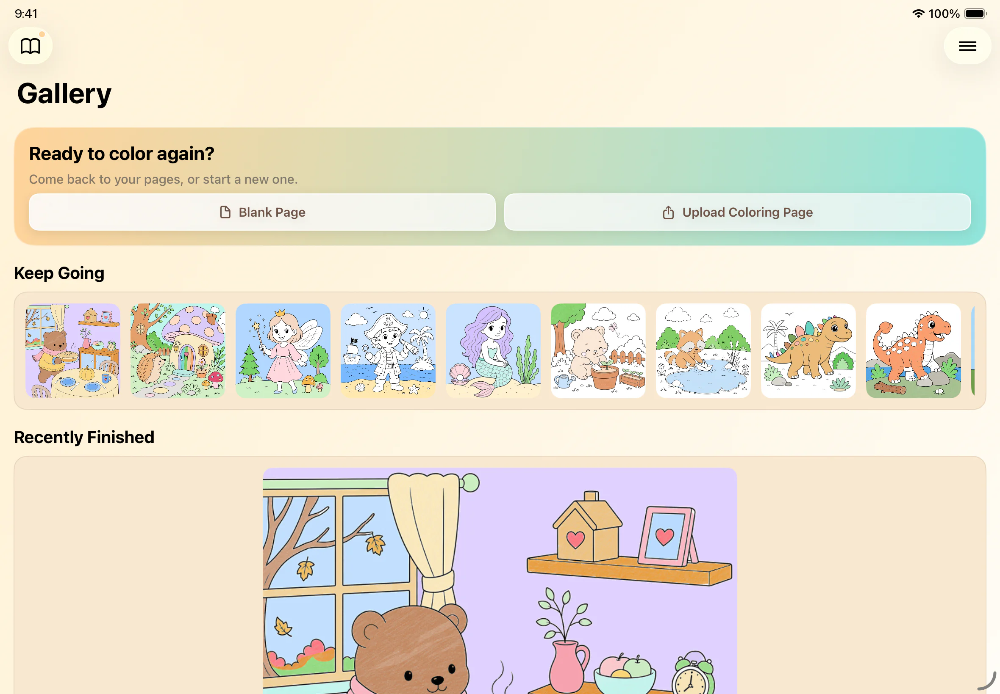
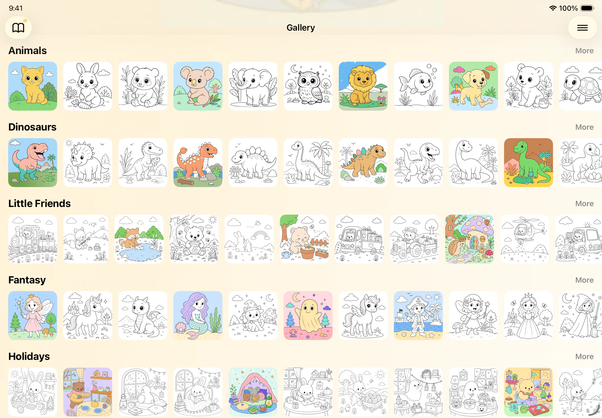
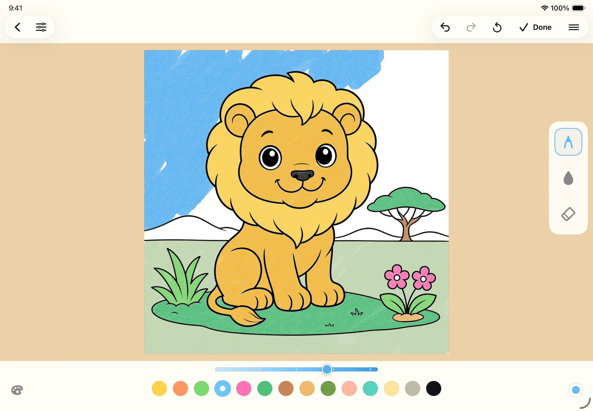
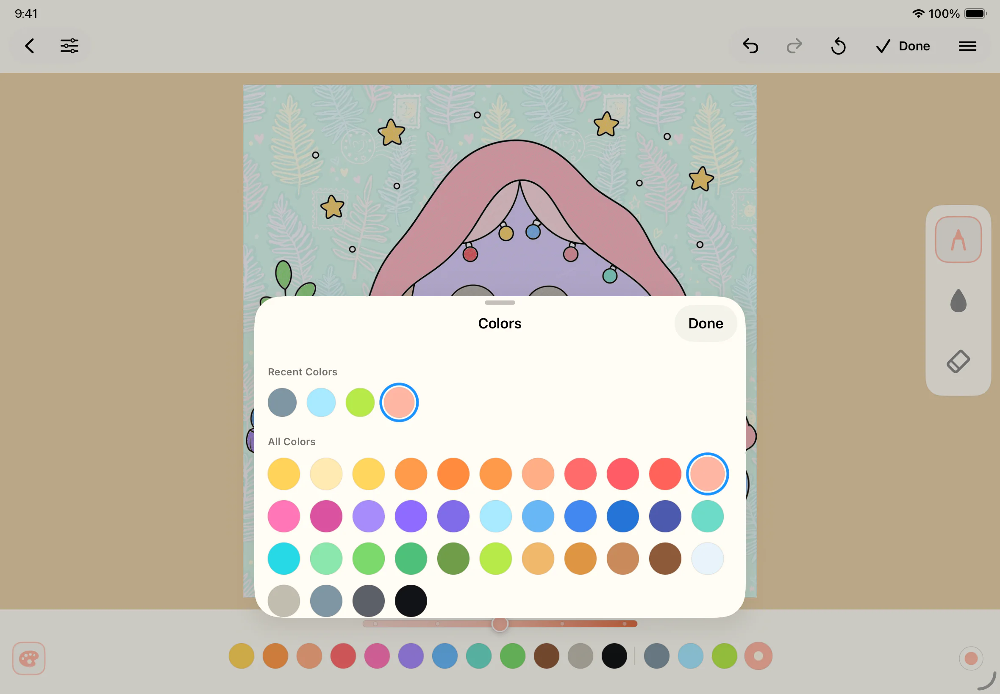

ColorPad
Stay immersed in creating.
A coloring app designed to keep children creating instead of navigating menus, managing tools, or searching for the right color.
Currently available through TestFlight. Requires the TestFlight app.

Coloring should not feel like managing software.
Children open a coloring app because they want to create. They should not have to work through complicated menus, switch between collections, or constantly adjust settings before they can continue.
ColorPad keeps the experience clear and approachable so the app can stay in the background and creativity can remain in the foreground.
Made to reduce interruptions
-
Colors stay within reach
Children can quickly find and reuse the colors they need without repeatedly switching between palettes.
-
Simple, clear tools
Familiar controls make it easier to start coloring and continue without stopping to manage settings.
-
Pages children care about
Families can choose from built-in pages or import their own line art, so children can color subjects that already matter to them.
-
Creative work stays close
Finished pictures remain in a private local gallery where children can revisit what they made.
-
No ads in the way
ColorPad avoids advertising, so children are not pulled away from creating by promotional interruptions.
-
Designed for touch
Large touch-friendly interactions make the experience comfortable on iPad, iPhone, and shared family devices.
Creative screen time for children and parents
ColorPad gives children an approachable place to create while giving parents a quieter alternative to fast, high-stimulation entertainment.
Parents can also bring in line art their child already loves, turning familiar characters, interests, or family-made drawings into new coloring pages.
Screenshots



Try ColorPad
ColorPad is currently available as a public TestFlight beta. It requires the TestFlight app.